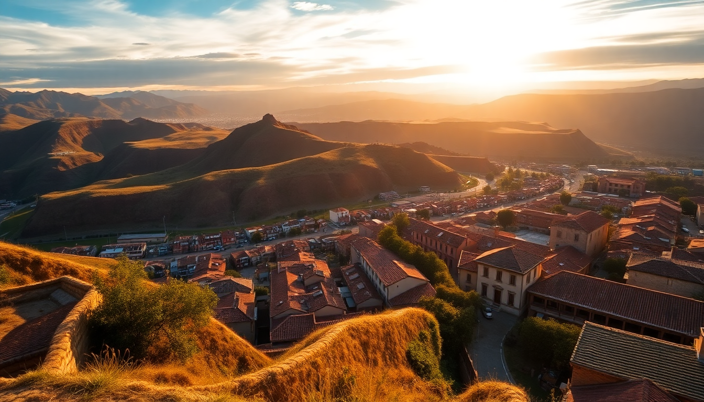

Where to Stay in Cusco: Best Neighborhoods for Every Budget

I spent three weeks in Cusco last May, and the first thing I learned is that altitude doesn’t care how fit you think you are. The second thing? Where you stay can make or break your trip. The city’s layout is a maze of steep cobblestone alleys, hidden courtyards, and microclimates that shift from block to block. Below is exactly what I found—neighborhood by neighborhood, price point by price point—so you can book without second-guessing.
What is the best neighborhood for first-time visitors?
Centro Histórico (the area around Plaza de Armas) is the obvious answer, and for good reason. You’re steps from the cathedral, the main restaurants, and the tour agencies that run trips to Machu Picchu. But it’s also loud. Street music, tour guides with megaphones, and the occasional protest march start before 7 a.m.
I stayed at Hotel Rumi Punku on Calle Hernando Pizarro—a converted colonial mansion with a courtyard that muffles the noise. It’s a 5-minute walk to the plaza, but the thick stone walls make it feel like a different world. Rooms start around $60/night in low season. For a step up, Tambo del Arriero on Santa Teresa offers a rooftop bar with direct views of the cathedral dome. It’s pricier ($120–$150), but the included oxygen bars in the lobby help with the altitude headache on day one.
- Pros: Walkable to everything, best restaurant density, easy to find taxis.
- Cons: Noisy, pricier, and some streets get packed with vendors.
- Best for: First-timers who want convenience and don’t mind trading sleep for location.
Is San Blas worth the uphill walk?
Yes, if your lungs can handle it. San Blas is the artsy neighborhood perched above the plaza. The walk from the main square takes 10–15 minutes, but the incline is brutal—especially on day two when the altitude hits. I huffed and puffed past galleries selling alpaca wool scarves and ceramic llamas, stopping every few steps to pretend I was admiring the view.
The trade-off is worth it. San Blas is quieter, more bohemian, and home to some of the best boutique hotels in Cusco. Nao Victoria Hostel is a standout for backpackers—clean dorms with lockers and a social rooftop for $15/night. Mid-range travelers should check Casa Matara, a 300-year-old house with just six rooms, each decorated with local textiles. I paid $85/night and had a private balcony overlooking the red-tiled roofs of the city.
- Pros: Quieter, better views, authentic artisan vibe.
- Cons: Steep hills, fewer ATMs, limited late-night food.
- Best for: Artists, solo travelers, and anyone who wants a local feel without sacrificing comfort.
What about San Pedro and the market area?
San Pedro is gritty, chaotic, and my personal favorite for budget eats. The San Pedro Market itself is a sensory overload—fresh juice stalls, roasted cuy (guinea pig), and rows of handwoven textiles. I ate a $2 breakfast of tamales and papaya juice there every morning.
The neighborhood around it is rougher around the edges. You’ll see more stray dogs, uneven sidewalks, and the occasional aggressive vendor. But hotels here are cheap. Hostal El Triunfo on Calle Tupac Amaru offers basic private rooms for $25/night. It’s not pretty—thin walls, cold showers—but it’s clean and a 10-minute walk to the plaza. For a better option, Atoq Hostal on Calle Siete Cuartones has double rooms with heating for $40. The owner helped me arrange a last-minute Sacred Valley tour at 10 p.m. the night before.
- Pros: Cheapest accommodation, best market food, very local.
- Cons: Can feel unsafe at night, limited amenities, loud.
- Best for: Budget travelers who prioritize food and don’t need frills.
Where should I stay if I want luxury without the tourist crowds?
Head to San Cristóbal, the neighborhood just above San Blas on the hill toward Sacsayhuaman. It’s mostly residential, with few restaurants or shops, but the views are insane. From the San Cristóbal Church plaza, you can see the entire Cusco valley and the Andes beyond.
The only luxury hotel here that’s worth the splurge is Belmond Hotel Monasterio, a former monastery built in 1592. Rooms start at $400/night, and you’re paying for the history—the original stone arches, a courtyard with a cedar tree planted in the 17th century, and a private chapel. I didn’t stay there (out of my budget), but I had a pisco sour at their bar and the service was impeccable. For something more reasonable, Casa Andina Premium on Plazoleta de San Cristóbal offers similar views at $150/night, with a solid breakfast buffet that includes coca tea for altitude sickness.
- Pros: Unbeatable views, quiet, safe.
- Cons: Few dining options, uphill walks, expensive.
- Best for: Couples on a honeymoon or travelers who want peace and panoramas.
Should I stay in the Sacred Valley instead of Cusco?
If you’re only in Peru for 4–5 days, no. The Sacred Valley is beautiful—terraced hills, tiny villages like Pisac and Urubamba—but it’s 45 minutes to an hour from Cusco by bus or taxi. You’ll lose a lot of time commuting to Machu Picchu trains (which depart from Ollantaytambo, another hour away).
That said, I spent two nights at Sol y Luna in Urubamba and loved it. It’s a collection of casitas set in a garden, with a pool and a spa. Rates hover around $200/night. The air is thinner here but the altitude is lower (2,800m vs. Cusco’s 3,400m), so you sleep better. If you have a full week, split your stay: three nights in Cusco for the city, two in Urubamba for the valley.
- Pros: Lower altitude, more scenic, great for hiking.
- Cons: Requires transport, fewer nightlife options, less convenient for day trips.
- Best for: Extended stays, nature lovers, and altitude-sensitive travelers.
What is the best area for nightlife?
Plaza de Armas is ground zero for bars and clubs, but it’s mostly tourist-oriented. Museo del Pisco on Calle Santa Catalina has decent pisco sours and a lively happy hour. For something more local, walk to San Blas and find The Lost City Bar on Calle Tandapata—a small dive with cheap beers and a pool table frequented by expats and backpackers.
If you want dancing, Mama Africa on Portal de Panes near the plaza plays salsa and reggaeton until 2 a.m. Cover is usually 10 soles (about $3). I went on a Tuesday and it was packed with a mix of tourists and locals. Avoid the clubs on the main plaza that advertise “free entry”—they often have a 50-sol minimum drink charge hidden in the fine print.
- Pros: Easy to walk between bars, cheap drinks, social atmosphere.
- Cons: Loud music until late, pickpocket risk in crowds.
- Best for: Solo travelers and groups under 30.
FAQ
Is Cusco safe at night? Yes, in the main tourist areas—Centro Histórico, San Blas, and San Cristóbal—I never felt unsafe. Stick to well-lit streets and avoid walking alone after midnight in San Pedro or near the bus terminal. Taxis are cheap (5–10 soles within the city) and easy to hail from hotel lobbies. Use a ride-hail app like Indrive for fixed prices.
How do I handle altitude sickness in Cusco? Drink coca tea (served free at most hotels), avoid alcohol for the first 24 hours, and sleep at lower altitudes if possible. I booked a room with oxygen at Tambo del Arriero for my first night and it helped. The real trick is to take it slow—don’t hike Sacsayhuaman on day one. If symptoms persist, head to Ollantaytambo in the Sacred Valley (2,800m) for a day.
What is the best way to get from Cusco to Machu Picchu? Take a taxi or bus to Ollantaytambo station (1.5 hours), then board the PeruRail or Inca Rail train to Aguas Calientes. Trains run multiple times daily and cost $50–$80 one-way. Book at least two weeks ahead during peak season (May–September). The cheaper alternative is a bus to Hidroeléctrica (6 hours) plus a 2-hour walk along the train tracks—only do this if you’re fit and have a full day.
Conclusion
- Centro Histórico is the safe bet for first-timers; book Hotel Rumi Punku for quiet comfort near the plaza.
- San Blas wins for views and boutique charm; Casa Matara is my top pick under $100.
- San Pedro is the budget foodie hub; Atoq Hostal offers solid value.
- San Cristóbal delivers luxury and solitude; splurge at Belmond Hotel Monasterio if you can.
- Split your stay if you have time: Cusco for culture, Urubamba for lower altitude and nature.